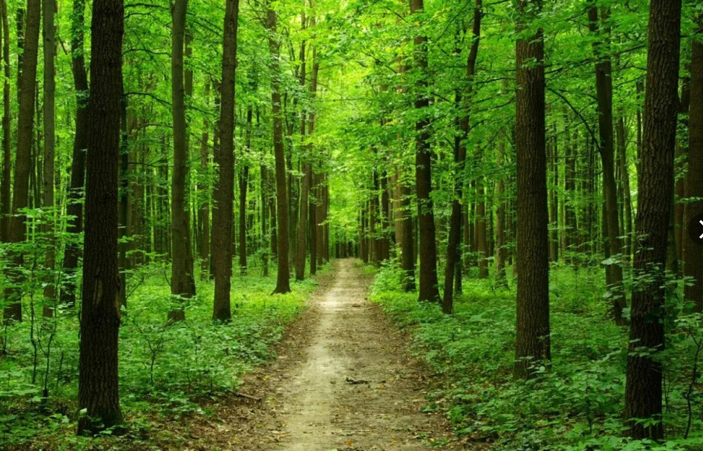

2. Тропа Древних Кедров
Место проведения: Реликтовый лесной массив «Зеленый Бор»
Продолжительность: 12 часов
Уровень сложности: Средний
Ближайший выезд: 27.09.2026
Стоимость: 3 200 руб.
Описание: Настоящее погружение в дикую природу. Маршрут проходит по холмистой лесной местности через подвесные переправы.
Забронировать этот тур ← Назад в каталог